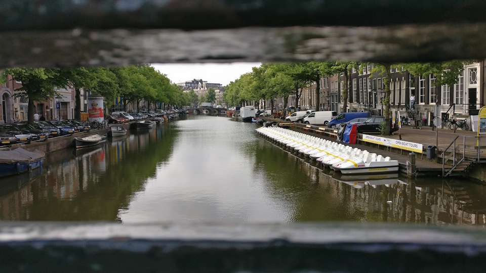
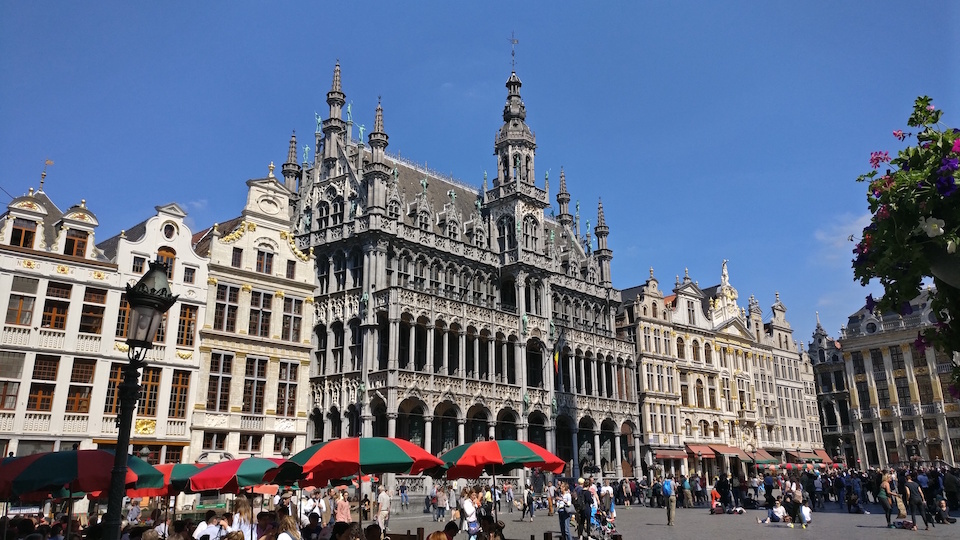
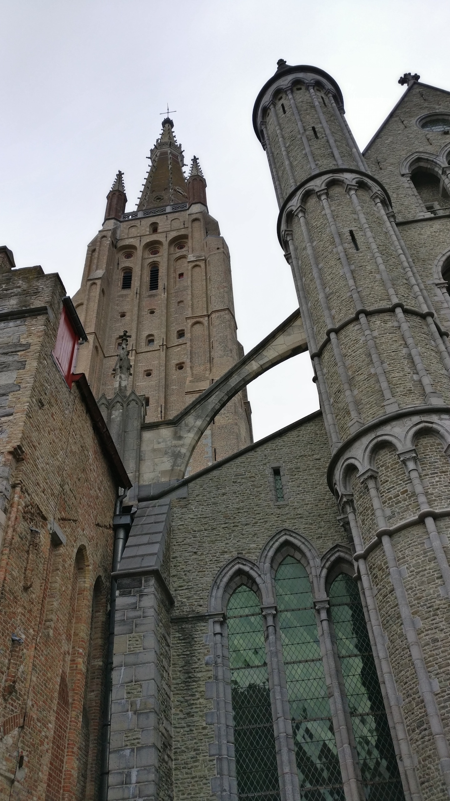
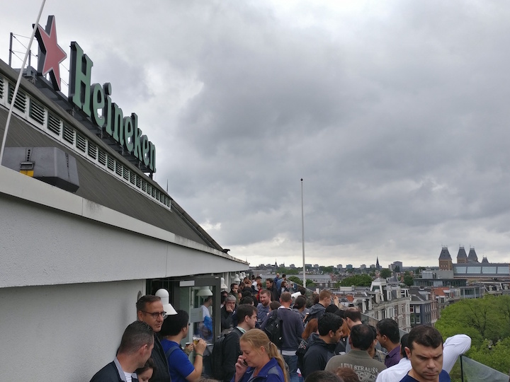
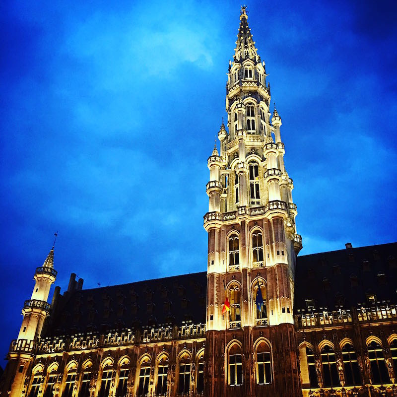

El Millennium Dome es un gran edificio con forma de domo en la península Greenwich, al sureste de Londres, construido inicialmente para albergar una exposición conmemorativa del comienzo del tercer milenio. Esta exposición abrió al público el 1 de enero de 2000 y se clausuró el 31 de diciembre del mismo año.
Tras unos años en desuso, el 31 de mayo de 2005, su nombre se cambió oficialmente a The O2, cuando la operadora de telefonía O2 plc filialz de la española Telefónica, compró los correspondientes derechos al promotor original, Anschutz Entertainment Group. En el centro del domo, se construyó un recinto deportivo cubierto denominado «The O2 Arena», inaugurado el 24 de junio de 2007, con las vistas puestas en los Juegos Olímpicos de Londres 2012, en los que fue la sede de las competiciones de gimnasia y de la fase final de baloncesto. Durante las Olimpiadas, el recinto deportivo se renombró como North Greenwich Arena.
Tuve el gran placer de poder visitar esta gran arena, subir el domo y tomar unas fotos espectaculares al atardecer, esto en un tour que proveen los mismos de la arena.
A mediados del siglo XVI cuando Jaume Codorníu, propietario de viñas y aperos, se dedicó a la elaboración de vinos. De aquel pionero y sus inicios poco se sabe excepto detalles extraídos de su testamento, donde se realzaba la importancia de la bodega, sus máquinas y los instrumentos propios de la viticultura extrema.
En 1659, la heredera de la masía de Can Codorníu, Anna, se casó con un joven viticultor llamado Miquel Raventós. Desde entonces, la familia Raventós ha permanecido durante siglos como propietaria de Codorníu. Dos siglos más tarde nació José Raventós Fatjó y empezó a escribir la historia del Cava. En 1872, consiguió, tras años de experimentos, elaborar su primera botella de cava. Al morir José, en 1885, su hijo Manuel Raventós heredó Can Codorníu y siguiendo los pasos de su padre cambió el rumbo del negocio familiar.
Hoy en día, Codorníu es el negocio familiar más antiguo de toda españa y la dimensión de sus viñedos está espectacular. Al visitar pude bajar al 4to piso subterráneo de sus bodegas, la cual ahora es un museo. Quedé impactado con el tamaño y la antiguedad del lugar. Además que al final nos dieron a probar dos de sus cavas más vendidas.
Un joven de México con una gran sonrisa y 3 pasiones: Personas, Viajes y Redes Sociales. En mayo del 2017 decidió combinar sus pasiones e iniciar un proyecto único de viajes sociales en todo el mundo.